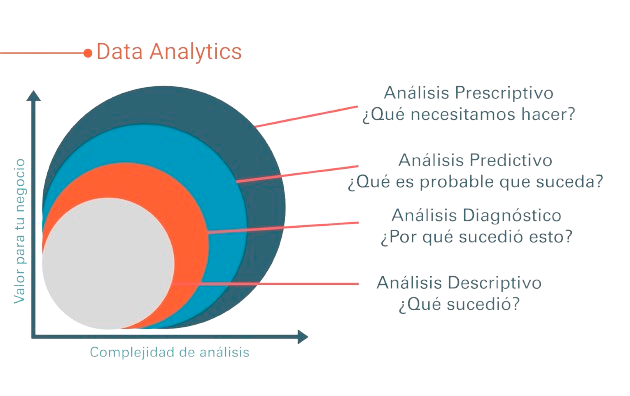

El análisis de datos es el proceso de examinar, limpiar y modelar datos para descubrir información útil, informar conclusiones y apoyar la toma de decisiones. Es fundamental en la extracción de valor de la Big Data.
La relación entre el análisis de datos y la programación es simbiótica. La programación proporciona las herramientas para manipular y analizar los datos, mientras que el análisis de datos ofrece insights que pueden ser utilizados para mejorar la programación y el desarrollo de software.
El análisis de datos se ha convertido en una piedra angular de la estrategia empresarial, permitiendo a las empresas desde startups hasta multinacionales, tomar decisiones basadas en datos, optimizar operaciones y personalizar la experiencia del cliente.
Las herramientas de análisis de datos varían desde software estadístico como R y Python, hasta plataformas de visualización de datos como Tableau y Power BI, pasando por sistemas de gestión de bases de datos SQL y NoSQL.
este tipo de análisis ahonda en los datos pasados para averiguar información sobre lo acontecido en el histórico de una empresa. Nos dan una visión general y nos aportan la comprensión del rendimiento de una compañía en diferentes hitos temporales. Dan respuesta a: “¿Qué ha pasado?”.
el análisis de diagnóstico describe las técnicas que se utilizará para preguntar a los datos: “¿Por qué ha ocurrido esto?”. La intención es hacer una inmersión profunda en los datos para buscar insights. Una vez que sabemos lo que ha ocurrido, querremos saber por qué ha ocurrido. Ahí es donde entra en juego el análisis de diagnóstico: entender por qué se está desarrollando una tendencia o por qué se ha producido un problema permitirá que la inteligencia empresarial aborde los problemas. Hay que evitar conjeturas inexactas y no confundir correlación y causalidad.
estos análisis utilizan estadísticas y técnicas de modelado para hacer predicciones sobre resultados y rendimiento futuros. El análisis predictivo examina los patrones de datos actuales e históricos para determinar si es probable que esos patrones vuelvan a surgir. Esto permite a las empresas y a los inversores ajustar el uso de sus recursos para aprovechar posibles acontecimientos futuros. Con este tipo de análisis mejoraremos la eficiencia operativa y reduciremos el riesgo, y daremos respuesta a preguntas como: ¿Qué es probable que ocurra en el futuro?.
es un tipo de análisis de datos que trata de responder a la pregunta «¿Cuál es la mejor estrategia a seguir?». Implica el uso de la tecnología para ayudar a las empresas a tomar mejores decisiones a través del análisis del raw data. La analítica prescriptiva tiene en cuenta específicamente la información sobre posibles situaciones o escenarios, los recursos disponibles, el rendimiento pasado y el rendimiento actual, y sugiere una estrategia operativa. Puede utilizarse para tomar decisiones en cualquier horizonte temporal, desde el inmediato hasta el de largo plazo. Es lo contrario de la analítica descriptiva, que examina las decisiones y los resultados a posteriori.
Información organizada en formatos definidos, como bases de datos SQL.
Información sin una forma definida, incluyendo texto, imágenes, y videos.
Datos que no residen en una base de datos relacional pero que tienen alguna estructura organizativa, como JSON o XML.
Definir un objetivo de análisis claro es crucial para orientar el proceso de análisis de datos. Esto incluye:
Identificar el problema o la oportunidad.
Determinar las preguntas específicas que el análisis de datos necesita responder.
Establecer métricas y criterios de éxito.
Para entender la percepción de la marca.
Usando análisis predictivo para anticipar demanda de productos.
Aplicando técnicas de machine learning para identificar transacciones sospechosas en tiempo real.